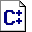

Keywords: writing style, engineer, paper
Biography
Philip's career has careened from general relativist to relative generalist, in diverse fits of focussed, obsessive activity. His current obsession is SVG (Scalable Vector Graphics) , including organization of the SVG Open 2003 Conference and Exhibition (http://www.svgopen.org), an act which he naïvely believed could be done in his spare time while not engaged in software engineering research, writing or business activities.
The writing habits of software engineers are investigated, with a view toward understanding canonical modes of thought and communication among individuals. A novel premise underlying this discussion is that software engineers actually have a writing style, and one that is no less valid than those attributable to recognized groups of writers such as journalists, playwrights, novelists or poets.
1. The Justification for a Software Engineering Writing Style
2. Observations on the Writings of Software Engineers
2.1 Ritual & Symbolism
2.2 Principles of Software Engineering Communication
2.2.1 Simplification of Complexity is Taboo
2.2.1.1 Maximize Features
2.2.1.2 Digression for Precision's Sake
2.2.1.3 Repeat Nothing
2.2.2 First Things Last
Footnotes
Acknowledgements
Bibliography
"Engineering style" may be considered an oxymoron, but then, to quote Dilbert [1] ,
Everyone is someone's weirdo.
It would be wrong to think that there should be a single manual of style applicable to all writing. Indeed, The Complete Idiot's Guide to Grammar and Style [IDIOT] should be considered just as "weird" to a software engineer as a software engineering manual of style would be to a complete idiot.
If symbolic anthropologists were to study software engineers
[2]
,
they would probably find the usual elements of ritual and symbolism that define a culture. An example ritual is multi-threaded, asynchronous group discussion over IRC. Cultural symbols include
foo
,
bar
,
:-)
and most importantly,
/
, which is believed to be the root of all things.
These examples have a direct bearing on modes of communication; for example, IRC enables software engineers to talk all at once without the familiar accusation of rudely interrupting.
The SVG diagram in Figure 1 shows five key stages of software engineering communication and the sequences in which they occur. However true understanding only comes with source code, provided here in Figure 2 .
Figure 1: Software Engineering Communication Diagram
Legend:
- Requirements
- Design
- Code
- Bug Reports
- Delivery Documents
<svg width="100%" height="100%" viewBox="0 0 100 100">
<title>Communication Diagram</title>
<defs>
<style type="text/css"><![CDATA[
.background {fill:gold}
.label, .arrow {fill:indigo; font-size:16; font-weight:bold}
.connector {fill:none; stroke-width:2.5; stroke:firebrick;
stroke-linejoin:bevel}
]]></style>
</defs>
<rect class="background" width="100" height="100"/>
<g class="label">
<text x="9" y="88">A</text>
<text x="62" y="22">B</text>
<text x="44" y="88">C</text>
<text x="26" y="22">D</text>
<text x="79" y="88">E</text>
</g>
<polyline class="connector" points="20,73 65,27 50,73 35,27 80,73"/>
<polygon class="arrow" points="-4.5,-4.5 4.5,0 -4.5,4.5">
<animateMotion rotate="auto" dur="16s" repeatCount="indefinite"
path="M20,73L65,27L50,73L65,27L50,73L35,27L50,73L35,27L80,73"/>
</polygon>
</svg>
|
Figure 2: SVG Code for Communication Diagram
If one were to try to summarize the meaning of this code, one would invariably have to change its meaning. For example, you can't expect the motion path to retain its meaning if you remove every second coordinate pair from the list shown in bold below:
<animateMotion rotate="auto" dur="16s" repeatCount="indefinite"
path="M20,73L65,27L50,73L65,27L50,73L35,27L50,73L35,27L80,73"/>
|
Likewise, any simplification of inherent complexity is forbidden among software engineers, since truth is more important than being able to tell a good story. In fact, software engineers practise a number of techniques to preserve and enhance complexity, as documented in the following sections.
Software engineers believe it is more important to take advantage of all available features of a given computer language or application than it is to make consistent use of a subset of features. For instance, this document's real purpose is to:
code
|
NOTE: Items of the types listed in Table 1 , when placed inside a figure, can be numbered, titled, given a caption and referenced; for example, Figure 1 , in Section 2.2.1 . Inline items such as this image cannot. |
| Element | Description | |
|---|---|---|
| Optional <title> and <figcaption> elements are also allowed inside <figure>. | ||
|
|
<graphic> | Points to an SVG, PNG, JPEG, GIF or BMP image file |
|

|
<code.block> | Code block, formatted in monospace font, preserving white space |
|
|
<para> | Paragraph |
Table 1
Software engineers believe in precision, and will therefore include every fact relevant to the point being made — even if this leads to a run-on sentence with lots of commas, dashes and parentheses (which may even be nested (up to any level (with cross-references (especially self-reference, as you can see in Section 2.2.1.2 , or alternatively Paragraph 36 (which is less useful than a section reference because paragraph numbers are not normally shown in a rendered document))))).
Whereas the mantra of other writers might be "repetition for emphasis", engineers believe in efficiency, and will never repeat an assertion, no matter how important or deeply hidden it is.
Software engineers tend to think in terms of sequential processes, and the outcome of a sequential process comes last. Whereas goals are normally stated first by other writers, consistent with a priority-based ordering, they are often stated last by software engineers. Fortunately, software engineers also begin reading a document at the end if they want to know what it is all about, so there is no problem with communication among like-minded colleagues.
Dilbert is a comic strip featuring a fictional character of the same name. It is written by Scott Adams and distributed by United Feature Syndicate, Inc. See http://www.dilbert.com/.
This study has not been done mainly because symbolic anthropologists spend too much time arguing with scientists and engineers to have studied any of them.
The author is grateful to Dilbert [1] and to the following groups of individuals for unwittingly serving as subjects of study:
To avoid causing embarrassment, I will not mention the specific names of those of my colleagues who have mastered the unique engineers' style of communication, except to claim that Philip A. Mansfield is definitely not on the list.
Participation on the World Wide Web Consortium SVG Working Group has been a fascinating exercise in design by committee, and one that is quite revealing when it comes to engineering communications. See http://www.w3.org/Graphics/SVG/.
XHTML rendition created by gcapaper Web Publisher v2.1, © 2001-3 Schema Software Inc.